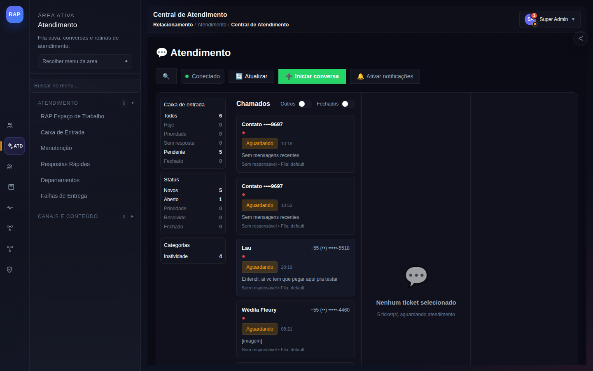
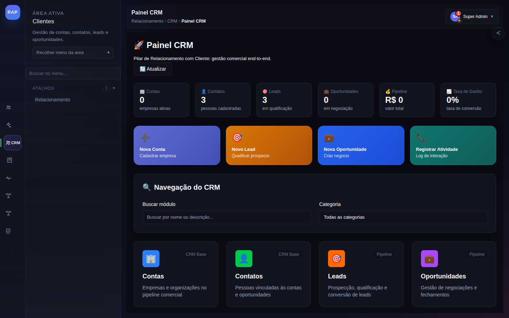
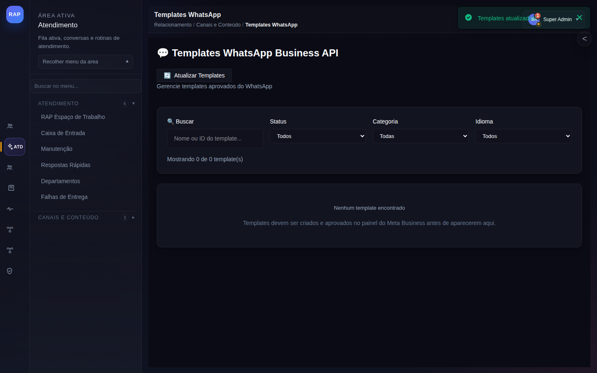
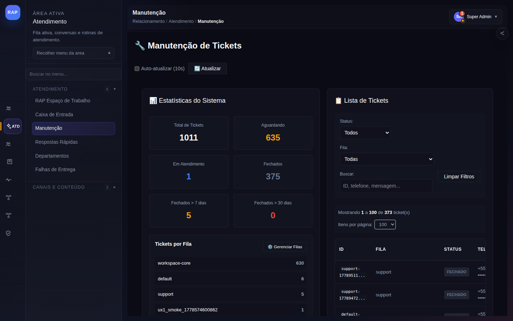
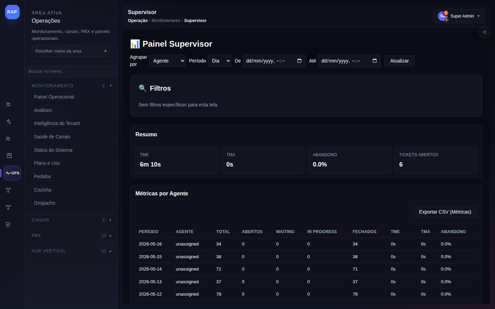

1
Agendamento e Triagem de Paciente
Da solicitação via WhatsApp à consulta confirmada com pré-triagem.
Trigger: Paciente envia mensagem solicitando consulta. Bot faz triagem inicial (sintomas, urgência, especialidade) e encaminha para agendamento.
PASSO 1
Solicitação WA
→
PASSO 2
Triagem Bot
→
PASSO 3
Encaminhamento
→
PASSO 4
Consulta Confirmada
→
PASSO 5
Follow-up Pós

/support
Triagem — Central de Atendimento
Atendente (ou bot) realiza triagem via WhatsApp: urgência, especialidade, plano de saúde e disponibilidade. Encaminha para agenda do médico disponível.
Receber solicitação de consulta
Coletar: especialidade, urgência e convênio
Verificar disponibilidade na agenda
Confirmar agendamento e enviar lembrete

/crm
Prontuário no CRM
Perfil do paciente no CRM: histórico de consultas, alergias, medicamentos em uso e plano de saúde. Acesso rápido do atendente durante o agendamento.
Localizar paciente por nome ou CPF
Verificar histórico de consultas e diagnósticos
Registrar novo agendamento com observações

/whatsapp-templates
Templates de Confirmação e Lembrete
Mensagens de confirmação de consulta (D-1) e lembrete de preparo (ex.: jejum, documentos). Personalizadas com nome, especialidade, data e endereço da clínica.
Enviar confirmação com data, hora e médico
Enviar lembrete D-1 com instruções de preparo
Enviar follow-up pós-consulta para feedback
2
Ticket de Manutenção com SLA
Abertura, acompanhamento e resolução de ticket dentro do SLA clínico.
Trigger: Problema operacional na clínica (equipamento, instalação, TI) é reportado via WhatsApp. Ticket criado com SLA definido por criticidade.
PASSO 1
Reporte do Problema
→
PASSO 2
Ticket Criado
→
PASSO 3
Em Atendimento
→
PASSO 4
Resolvido com SLA

/maintenance
Manutenção de Tickets
Painel de tickets operacionais com status de SLA. Categorias: equipamento médico, instalações, TI e higienização. Visualização de todos os tickets em aberto com prioridade e responsável.
Abrir ticket: tipo, localização, urgência
Sistema define SLA por criticidade automaticamente
Responsável é notificado via WhatsApp
Ticket resolvido e fechado dentro do SLA

/supervisor
Monitor de SLA Clínico
KPIs de tickets: TME (tempo médio de espera), TMA (tempo médio de atendimento) e taxa de resolução dentro do SLA. Alertas para tickets próximos do vencimento.
Monitorar tickets com SLA em risco
Acionar escalonamento quando necessário
Analisar padrões de problema recorrente